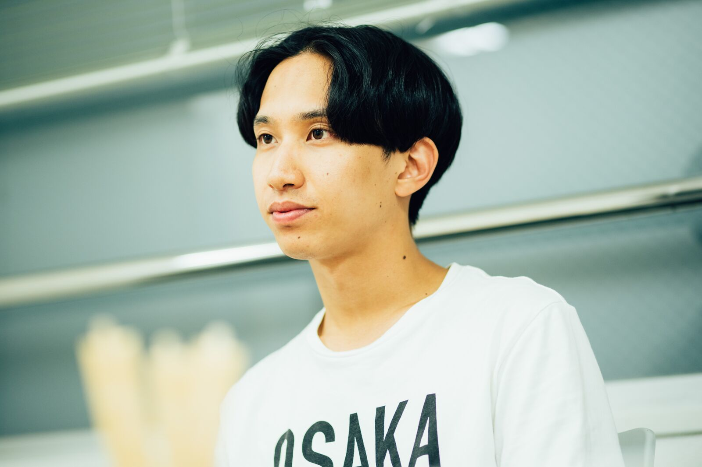
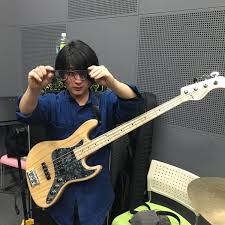
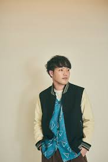

はっとり (Vo/Gt)

ほとんどの楽曲の作詞・作曲を担当。
ユニークな歌詞と、エモーショナルな歌声がバンドの核となっています。
高野 賢也 (Ba/Cho)

愛称は「賢也くん」。
安定感のあるベースラインで、バンドのサウンドを底から支えています。
田辺 由明 (Gt/Cho)

愛称は「よっちゃん」。
ハードロック好きというバックボーンがあり、力強いギタープレイが魅力。
長谷川 大喜 (Key/Cho)
愛称は「大ちゃん」。
ジャズの要素を感じさせるピアノやキーボードの音色が、マカえんらしさを引き立てます。